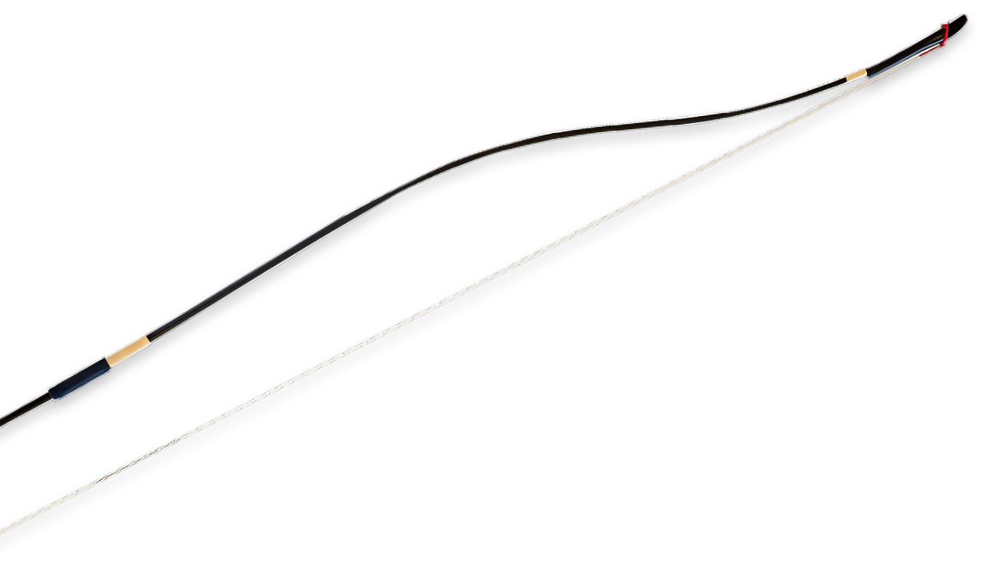
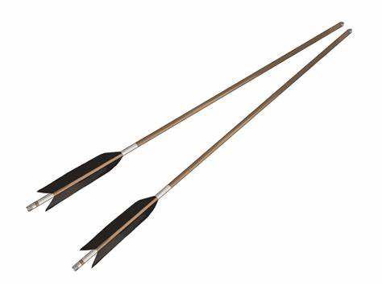
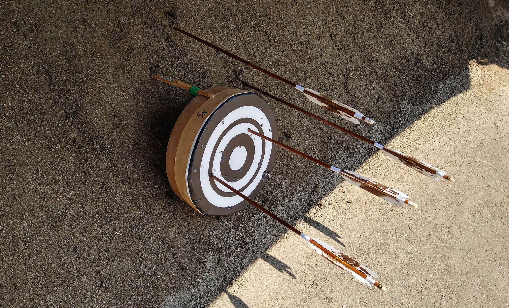

自己紹介
| 項目 | 回答 |
|---|---|
| 名前 | シノハラ |
| 出身 | オオサカ |
| 干支とか | サル |
| 学生時代の部活 | 剣道、弓道 |
| 好きなたべもの | みかん |
趣味とか

弓
弓道で使う弓です。
競技を行う上で一番欠かせないものです。

矢
弓道で使う矢です。簡単に折れてしまう

的
直径30cm程の的。的から約25m離れたところから矢をはなちます。矢を的に当てるのはとても難しいです。
座右の銘
前に進み続けよう